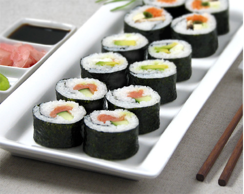

Maki
Maki is a type of rolled sushi. It is made by first putting sushi
rice onto a
sheet of nori,
then adding any number and combinations of ingredients.
Common
rolls ore listed below.
Common Rolls

Maki: rolled sushi
California
Crab, cucumber, avocado
Tekka Maki
Tuna
Sake Maki
Salmon
Spider Roll
Softshell crab tempura
Rainbow Roll
Tuna, salmon, halibut, avocado, daikon sprouts
Copyright © 2012 Intro to Computer Science